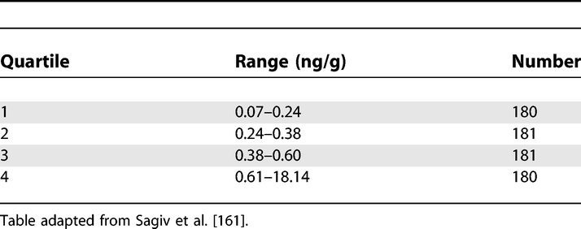

Results: Main Results (16)
The items from STROBE state that you should report:
- Give unadjusted estimates and, if applicable, confounder-adjusted estimates and their precision (e.g., 95% confidence interval). Make clear which confounders were adjusted for and why they were included
- Report category boundaries when continuous variables were categorized
- If relevant, consider translating estimates of relative risk into absolute risk for a meaningful time period
Some key items to consider adding:
- Present both relative risks and absolute measures such as event rates per person-time, risk differences or numbers needed to treat/numbers needed to harm
- Present results per time period of follow-up, if applicable, so as to indicate any time dependence of the association between exposure and outcome
- Report methods to standardize the results from the study sample to the target population
- For assessments involving >1 rater, interrater reliability should be reported
- Give unadjusted estimates and, if applicable, adjusted estimates and their precision (e.g, 95% confidence interval). Make clear which confounders and interactions were adjusted. Report all relevant parameters that were part of the model
- Report results of any adjustments for multiple comparisons
Explanation 16a
In many situations, authors may present the results of unadjusted or minimally adjusted analyses and those from fully adjusted analyses. We advise giving the unadjusted analyses together with the main data, for example the number of cases and controls that were exposed or not. This allows the reader to understand the data behind the measures of association (see also item 15). For adjusted analyses, report the number of persons in the analysis, as this number may differ because of missing values in covariates (see also item 12c). Estimates should be given with confidence intervals. Readers can compare unadjusted measures of association with those adjusted for potential confounders and judge by how much, and in what direction, they changed.
Readers may think that ‘adjusted’ results equal the causal part of the measure of association, but adjusted results are not necessarily free of random sampling error, selection bias, information bias, or residual confounding (see box 5). Thus, great care should be exercised when interpreting adjusted results, as the validity of results often depends crucially on complete knowledge of important confounders, their precise measurement, and appropriate specification in the statistical model (see also item 20). (Christenfeld et al., 2004; Smith & Phillips, 1990)
Authors should explain all potential confounders considered, and the criteria for excluding or including variables in statistical models. Decisions about excluding or including variables should be guided by knowledge, or explicit assumptions, on causal relations. Inappropriate decisions may introduce bias, for example by including variables that are in the causal pathway between exposure and disease (unless the aim is to asses how much of the effect is carried by the intermediary variable). If the decision to include a variable in the model was based on the change in the estimate, it is important to report what change was considered sufficiently important to justify its inclusion. If a ‘backward deletion’ or ‘forward inclusion’ strategy was used to select confounders, explain that process and give the significance level for rejecting the null hypothesis of no confounding. Of note, we and others do not advise selecting confounders based solely on statistical significance testing. (Greenland & Neutra, 1980; Robins, 2001; Rothman & Greenland, 1998b)
Recent studies of the quality of reporting of epidemiological studies found that confidence intervals were reported in most articles. (Pocock et al., 2004) However, few authors explained their choice of confounding variables. (Pocock et al., 2004; Tooth et al., 2005; Vandenbroucke et al., 2007)
Examples 16a
Example 1
“We initially considered the following variables as potential confounders by Mantel-Haenszel stratified analysis: (…) The variables we included in the final logistic regression models were those (…) that produced a 10% change in the odds ratio after the Mantel-Haenszel adjustment” (Lee et al., 2002; Vandenbroucke et al., 2007).
Example 2
Relative Rates of Rehospitalisation by Treatment in Patients in Community Care after First Hospitalisation due to Schizophrenia and Schizoaffective Disorder
https://doi.org/10.1371/journal.pmed.0040297.t008 (Tiihonen et al., 2006; Vandenbroucke et al., 2007)
Explanation 16b
Categorizing continuous data has several important implications for analysis (see box 4) and also affects the presentation of results. In tables, outcomes should be given for each exposure category, for example as counts of persons at risk, person-time at risk, if relevant separately for each group (eg, cases and controls). Details of the categories used may aid comparison of studies and meta-analysis. If data were grouped using conventional cut-points, such as body mass index thresholds, (World Health Organization, 2020) (updated reference) group boundaries (ie, range of values) can be derived easily, except for the highest and lowest categories. If quantilederived categories are used, the category boundaries cannot be inferred from the data. As a minimum, authors should report the category boundaries; it is helpful also to report the range of the data and the mean or median values within categories. (Vandenbroucke et al., 2007)
Example 16b
Report category boundaries when continuous variables were categorised.

Polychlorinated Biphenyls in Cord Serum
https://doi.org/10.1371/journal.pmed.0040297.t005 (Sagiv et al., 2007; Vandenbroucke et al., 2007)
Explanation 16c
The results from studies examining the association between an exposure and a disease are commonly reported in relative terms, as ratios of risks, rates or odds (see box 8).
Relative measures capture the strength of the association between an exposure and disease. If the relative risk is a long way from 1 it is less likely that the association is due to confounding. 164,165 Relative effects or associations tend to be more consistent across studies and populations than absolute measures, but what often tends to be the case may be irrelevant in a particular instance. For example, similar relative risks were obtained for the classic cardiovascular risk factors for men living in Northern Ireland, France, the USA and Germany, despite the fact that the underlying risk of coronary heart disease varies substantially between these countries. (Empana et al., 2003; Tunstall-Pedoe et al., 1999) In contrast, in a study of hypertension as a risk factor for cardiovascular disease mortality, the data were more compatible with a constant rate difference than with a constant rate ratio. (Cambien et al., 1985)
Widely used statistical models, including logistic (Hosmer et al., 1991) and proportional hazards (Cox) regression (Tibshirani, 1982) are based on ratio measures. In these models, only departures from constancy of ratio effect measures are easily discerned. Nevertheless, measures which assess departures from additivity of risk differences, such as the Relative Excess Risk from Interaction (RERI, see item 12b and box 8), can be estimated in models based on ratio measures.
In many circumstances, the absolute risk associated with an exposure is of greater interest than the relative risk. For example, if the focus is on adverse effects of a drug, one will want to know the number of additional cases per unit time of use (eg, days, weeks, or years). The example gives the additional number of breast cancer cases per 1000 women who used hormone-replacement therapy for 10 years. (Beral, 2003) Measures such as the attributable risk or population attributable fraction may be useful to gauge how much disease can be prevented if the exposure is eliminated. They should preferably be presented together with a measure of statistical uncertainty (eg, confidence intervals, as in the example). Authors should be aware of the strong assumptions made in this context, including a causal relationship between a risk factor and disease (also see [box 7][Box 7. Measures of association, effect and impact)]. (Rockhill et al., 1998) Because of the semantic ambiguity and complexities involved, authors should report in detail what methods were used to calculate attributable risks, ideally giving the formulae used. (Uter & Pfahlberg, 2001)
A recent survey of abstracts of 222 articles published in leading medical journals found that in 62% of abstracts of randomized trials including a ratio measure absolute risks were given, but only in 21% of abstracts of cohort studies. (Schwartz et al., 2006) A free text search of Medline 1966 to 1997 showed that 619 items mentioned attributable risks in the title or abstract, compared to 18,955 using relative risk or odds ratio, for a ratio of 1 to 31. (Nakayama et al., 1998; Vandenbroucke et al., 2007)
Example 16c
“10 years’ use of HRT [hormone replacement therapy] is estimated to result in five (95% CI 3–7) additional breast cancers per 1000 users of oestrogen-only preparations and 19 (15–23) additional cancers per 1000 users of oestrogen-progestagen combinations” (Beral, 2003; Vandenbroucke et al., 2007).
Box 7. Measures of association, effect and impact
Observational studies may be solely done to describe the magnitude and distribution of a health problem in the population. They may examine the number of people who have a disease at a particular time (prevalence), or that develop a disease over a defined period (incidence). The incidence may be expressed as the proportion of people developing the disease (cumulative incidence) or as a rate per person-time of follow-up (incidence rate). Specific terms are used to describe different incidences; amongst others, mortality rate, birth rate, attack rate, or case fatality rate. Similarly, terms like point prevalence and period, annual or lifetime prevalence are used to describe different types of prevalence (Last, 2000).
Other observational studies address cause-effect relationships. Their focus is the comparison of the risk, rate or prevalence of the event of interest between those exposed and those not exposed to the risk factor under investigation. These studies often estimate a ‘relative risk’, which may stand for risk ratios (ratios of cumulative incidences) as well as rate ratios (ratios of incidence rates). In case-control studies only a fraction of the source population (the controls) are included. Results are expressed as the ratio of the odds of exposure among cases and controls. This odds ratio provides an estimate of the risk or rate ratio depending on the sampling of cases and controls (see also Box 1) (Cornfield, 1951; Pearce, 1993). The prevalence ratio or prevalence odds ratio from cross-sectional studies may be useful in some situations (Rothman & Greenland, 1998a).
Expressing results both in relative and absolute terms may often be helpful. For example, in a study of male British doctors the incidence rate of death from lung cancer over 50 years of follow-up was 249 per 100,000 per year among smokers, compared to 17 per 100,000 per year among non-smokers: a rate ratio of 14.6 (249/17) (Doll et al., 1954). For coronary heart disease (CHD), the corresponding rates were 1001 and 619 per 100,000 per year, for a rate ratio of 1.61 (1001/619). The effect of smoking on death appears much stronger for lung cancer than for CHD. The picture changes when we consider the absolute effects of smoking. The difference in incidence rates was 232 per 100,000 per year (249 − 17) for lung cancer and 382 for CHD (1001 − 619). Therefore, among doctors who smoked, smoking was more likely to cause death from CHD than from lung cancer.
How much of the disease burden in a population could be prevented by eliminating an exposure? Global estimates have been published for smoking: according to one study 91% of all lung cancers, 40% of CHD and 33% of all deaths among men in 2000 were attributed to smoking (Ezzati & Lopez, 2003). The population attributable fraction is generally defined as the proportion of cases caused by a particular exposure, but several concepts (and no unified terminology) exist, and incorrect approaches to adjust for other factors are sometimes used (S, n.d.; Uter & Pfahlberg, 2001). What are the implications for reporting? The relative measures emphasise the strength of an association, and are most useful in etiologic research. If a causal relationship with an exposure is documented and associations are interpreted as effects, estimates of relative risk may be translated into suitable measures of absolute risk in order to gauge the possible impact of public health policies (see item 16c) (Rose, 2001). However, authors should be aware of the strong assumptions made in this context (Rockhill et al., 1998). Care is needed in deciding which concept and method is appropriate for a particular situation. (Vandenbroucke et al., 2007)
Field-specific guidance
Infectious disease molecular epidemiology (Field et al., 2014)
- Consider showing molecular relatedness of strain types by means of a dendrogram or phylogenetic tree
Medical abortion (Creinin & Chen, 2016)
- Present treatment success for each cohort and by gestational age
- Present continuing pregnancies for each cohort and by gestational age
- Present reasons for surgical intervention other than continuing pregnancy for each cohort and by gestational age
Neonatal infections (Fitchett et al., 2016)
- For incidence, give risk per 1000 livebirths, or if alternative denominator used (eg, total births or bed days), define this clearly
Nutritional data (Lachat et al., 2016)
- Specify if nutrient intakes are reported with or without inclusion of dietary supplement intake, if applicable
Seroepidemiologic studies for influenza (Horby et al., 2017)
- Report unadjusted estimates of distribution of titers by age group
References
Beral, V. (2003). Breast cancer and hormone-replacement therapy in the Million Women Study. The Lancet, 362(9382), 419–427. http://www.sciencedirect.com/science/article/pii/S0140673603140652
Cambien, F., Chretien, J. M., Ducimetiere, P., Guize, L., & Richard, J. L. (1985). Is the relationship between blood pressure and cardiovascular risk dependent on body mass index? American Journal of Epidemiology, 122(3), 434–442. https://doi.org/10.1093/oxfordjournals.aje.a114124
Christenfeld, N. J. S., Sloan, R. P., Carroll, D., & Greenland, S. (2004). Risk Factors, Confounding, and the Illusion of Statistical Control. Psychosomatic Medicine, 66(6), 868–875. https://doi.org/10.1097/01.psy.0000140008.70959.41
Cornfield, J. (1951). A Method of Estimating Comparative Rates from Clinical Data. Applications to Cancer of the Lung, Breast, and Cervix. JNCI: Journal of the National Cancer Institute, 11(6), 1269–1275. https://doi.org/10.1093/jnci/11.6.1269
Creinin, M. D., & Chen, M. J. (2016). Medical abortion reporting of efficacy: The MARE guidelines. Contraception, 94(2), 97–103. https://doi.org/10.1016/j.contraception.2016.04.013
Doll, R., Peto, R., Boreham, Jillian, & Sutherland, I. (1954). Mortality in relation to smoking: 50 years’ observations on male british doctors. British Medical Journal, 328, 1519. https://www.bmj.com/content/328/7455/1519?ssource=mfc
Empana, J. P., Ducimetiere, P., Arveiler, D., Ferrieres, J., Evans, A., Ruidavets, J. B., Haas, B., Yarnell, J., Bingham, A., Amouyel, P., & Dallongeville, J. (2003). Are the Framingham and PROCAM coronary heart disease risk functions applicable to different European populations?The PRIME Study. European Heart Journal, 24(21), 1903–1911. https://doi.org/10.1016/j.ehj.2003.09.002
Ezzati, M., & Lopez, A. D. (2003). Estimates of global mortality attributable to smoking in 2000. The Lancet, 362(9387), 847–852. http://www.sciencedirect.com/science/article/pii/S0140673603143383
Field, N., Cohen, T., Struelens, M. J., Palm, D., Cookson, B., Glynn, J. R., Gallo, V., Ramsay, M., Sonnenberg, P., MacCannell, D., Charlett, A., Egger, M., Green, J., Vineis, P., & Abubakar, I. (2014). Strengthening the Reporting of Molecular Epidemiology for Infectious Diseases (STROME-ID): An extension of the STROBE statement. The Lancet Infectious Diseases, 14(4), 341–352. https://doi.org/10.1016/S1473-3099(13)70324-4
Fitchett, E. J. A., Seale, A. C., Vergnano, S., Sharland, M., Heath, P. T., Saha, S. K., Agarwal, R., Ayede, A. I., Bhutta, Z. A., Black, R., Bojang, K., Campbell, H., Cousens, S., Darmstadt, G. L., Madhi, S. A., Meulen, A. S.-t., Modi, N., Patterson, J., Qazi, S., … Lawn, J. E. (2016). Strengthening the Reporting of Observational Studies in Epidemiology for Newborn Infection (STROBE-NI): An extension of the STROBE statement for neonatal infection research. The Lancet Infectious Diseases, 16(10), e202–e213. https://doi.org/10.1016/S1473-3099(16)30082-2
Greenland, S., & Neutra, R. (1980). Control of Confounding in the Assessment of Medical Technology. International Journal of Epidemiology, 9(4), 361–367. https://doi.org/10.1093/ije/9.4.361
Horby, P. W., Laurie, K. L., Cowling, B. J., Engelhardt, O. G., Sturm-Ramirez, K., Sanchez, J. L., Katz, J. M., Uyeki, T. M., Wood, J., Van Kerkhove, M. D., & the CONSISE Steering Committee. (2017). CONSISE statement on the reporting of Seroepidemiologic Studies for influenza (ROSES-I statement): An extension of the STROBE statement. Influenza and Other Respiratory Viruses, 11(1), 2–14. https://doi.org/10.1111/irv.12411
Hosmer, D. W., Taber, S., & Lemeshow, S. (1991). The importance of assessing the fit of logistic regression models: A case study. American Journal of Public Health, 81(12), 1630–1635. https://doi.org/10.2105/AJPH.81.12.1630
Lachat, C., Hawwash, D., Ocké, M. C., Berg, C., Forsum, E., Hörnell, A., Larsson, C., Sonestedt, E., Wirfält, E., Åkesson, A., Kolsteren, P., Byrnes, G., De Keyzer, W., Van Camp, J., Cade, J. E., Slimani, N., Cevallos, M., Egger, M., & Huybrechts, I. (2016). Strengthening the Reporting of Observational Studies in Epidemiology—Nutritional Epidemiology (STROBE-nut): An Extension of the STROBE Statement. PLOS Medicine, 13(6), e1002036. https://doi.org/10.1371/journal.pmed.1002036
Last, J. (2000). A Dictionary of Epidemiology. Oxford University Press.
Lee, G. M., Neutra, R. R., Hristova, L., Yost, M., & Hiatt, R. A. (2002). A Nested Case-Control Study of Residential and Personal Magnetic Field Measures and Miscarriages. Epidemiology, 13(1), 21–31. https://www.jstor.org/stable/3703243
Nakayama, T., Zaman, M. M., & Tanaka, H. (1998). Reporting of attributable and relative risks, 1966-97. The Lancet, 351(9110), 1179. https://www.thelancet.com/journals/lancet/article/PIIS0140-6736(05)79123-6/abstract
Pearce, N. (1993). What Does the Odds Ratio Estimate in a Case-Control Study? International Journal of Epidemiology, 22(6), 1189–1192. https://doi.org/10.1093/ije/22.6.1189
Pocock, S. J., Collier, T. J., Dandreo, K. J., Stavola, B. L. de, Goldman, M. B., Kalish, L. A., Kasten, L. E., & McCormack, V. A. (2004). Issues in the reporting of epidemiological studies: A survey of recent practice. The BMJ, 329(7471), 883. https://doi.org/10.1136/bmj.38250.571088.55
Robins, J. M. (2001). Data, Design, and Background Knowledge in Etiologic Inference. Epidemiology, 12(3), 313–320. https://www.jstor.org/stable/3703708
Rockhill, B., Newman, B., & Weinberg, C. (1998). Use and misuse of population attributable fractions. American Journal of Public Health, 88(1), 15–19. https://doi.org/10.2105/AJPH.88.1.15
Rose, G. (2001). Sick individuals and sick populations. International Journal of Epidemiology, 30(3), 427–432. https://academic.oup.com/ije/article/30/3/427/736897
Rothman, K., & Greenland, S. (1998a). Measures of disease frequency. In Modern epidemiology (2nd ed., pp. 44–45). Lippincott Raven.
Rothman, K., & Greenland, S. (1998b). Precision and validity in epidemiologic studies. In Modern epidemiology (2nd ed., pp. 120–125). Lippincott Raven.
S, G. (n.d.). Applications of stratified analysis methods. In Modern Epidemiology (2nd ed., pp. 295–297). Lippincott Raven.
Sagiv, S. K., Tolbert, P. E., Altshul, L. M., & Korrick, S. A. (2007). Organochlorine Exposures during Pregnancy and Infant Size at Birth. Epidemiology, 18(1), 120–129. https://www.jstor.org/stable/20486327
Schwartz, L. M., Woloshin, S., Dvorin, E. L., & Welch, H. G. (2006). Ratio measures in leading medical journals: Structured review of accessibility of underlying absolute risks. BMJ, 333(7581), 1248. https://doi.org/10.1136/bmj.38985.564317.7C
Smith, G. D., & Phillips, A. (1990). Declaring independence: Why we should be cautious. Journal of Epidemiology and Community Health, 44(4), 257–258. https://www.ncbi.nlm.nih.gov/pmc/articles/PMC1060665/
Tibshirani, R. (1982). A plain man’s guide to the proportional hazards model. Clin Invest Med, 5, 63–68. http://statweb.stanford.edu/~tibs/ftp/plain.pdf
Tiihonen, J., Walhbeck, K., Lonnqvist, J., Klaukka, T., Ioannidis, J. P. A., Volavka, J., & Haukka, J. (2006). Effectiveness of antipsychotic treatments in a nationwide cohort of patients in community care after first hospitalisation due to schizophrenia and schizoaffective disorder: Observational follow-up study. BMJ : British Medical Journal, 333(7561), 224. https://doi.org/10.1136/bmj.38881.382755.2F
Tooth, L., Ware, R., Bain, C., Purdie, D. M., & Dobson, A. (2005). Quality of Reporting of Observational Longitudinal Research. American Journal of Epidemiology, 161(3), 280–288. https://doi.org/10.1093/aje/kwi042
Tunstall-Pedoe, H., Kuulasmaa, K., Mahonen, M., Tolonen, H., & Ruokokoski, E. (1999). Contribution of trends in survival and coronar y-event rates to changes in coronary heart disease mortality: 10-year results from 37 WHO MONICA Project populations. The Lancet, 353(9164), 1547–1557. https://doi.org/10.1016/S0140-6736(99)04021-0
Uter, W., & Pfahlberg, A. (2001). The application of methods to quantify attributable risk in medical practice. Statistical Methods in Medical Research, 10(3), 231–237. https://doi.org/10.1177/096228020101000305
Vandenbroucke, J. P., Elm, E. von, Altman, D. G., Gotzsche, P. C., Mulrow, C. D., Pocock, S. J., Poole, C., Schlesselman, J. J., & Egger, M. (2007). Strengthening the Reporting of Observational Studies in Epidemiology (STROBE): Explanation and Elaboration. Epidemiology, 18(6), 805–835. https://doi.org/10.1097/EDE.0b013e3181577511
World Health Organization. (2020). Body mass index (bmi). www.euro.who.ant/en/health-topics/disease-prevention/nutrition/a-healthy-lifestyle/body-mass-index-bmi